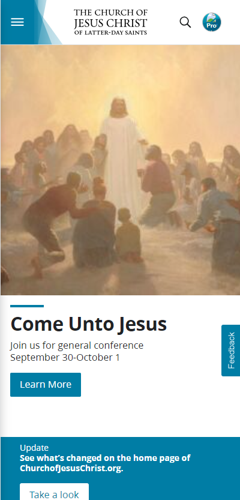
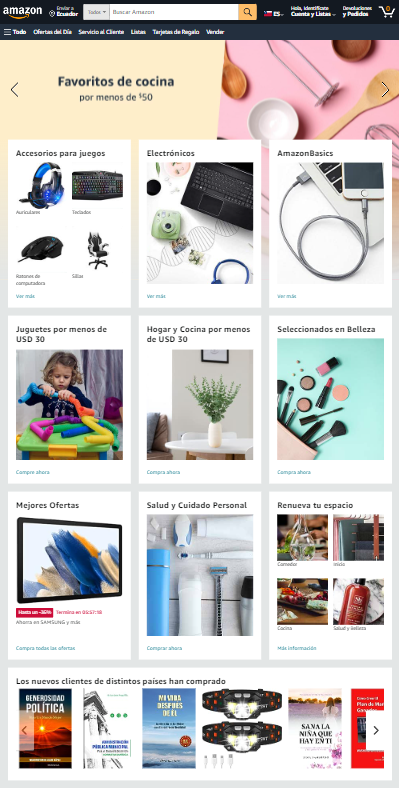

Visual Hierarchy
Intel
Intel.comThe website uses different sizes on its elements to create an attractive layout. The large and bold headline captures the attention of the visitors, while the blue button invites them to learn more.
White Space and Clean Design
The Church of Jesus Christ of Latter-day Saints
churchofjesuschrist.org
The website uses minimal typography, icons, and colors, creating a clean and elegant look. The fonts are consistent and easy to read, the icons are simple and meaningful, and the colors are harmonious and pleasan
Alignment
Amazon
amazon.com
The website uses a grid system to create a consistent and organized layout. The grid system divides the web page into columns and rows that help to align the content and elements by categories horizontally and vertically